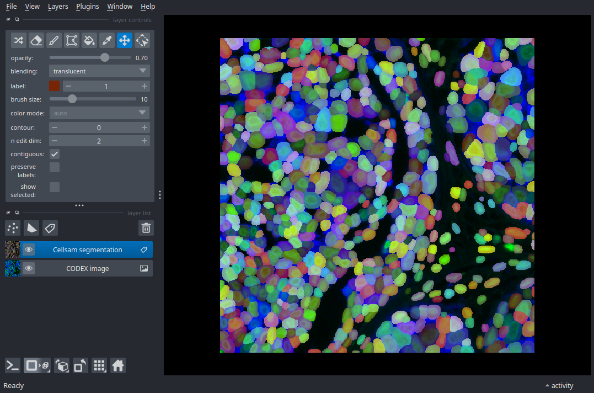

Note
Go to the end to download the full example code.
Multiplexed Imaging: CODEX#
[ 0 18481553 27300386]
import imageio.v3 as iio
import napari
from cellSAM import cellsam_pipeline
img = iio.imread("../sample_imgs/tissuenet.png")
# Image is 3-channel RGB where Channel 1 (G) represents a nuclear stain
# and Channel 2 (B) a membrane stain. Channel 0 (R) is blank.
print(img.sum(axis=(0, 1)))
mask = cellsam_pipeline(img, use_wsi=False)
nim = napari.view_image(img, name="CODEX image");
nim.add_labels(mask, name="Cellsam segmentation");
if __name__ == "__main__":
napari.run()
Total running time of the script: (0 minutes 8.690 seconds)